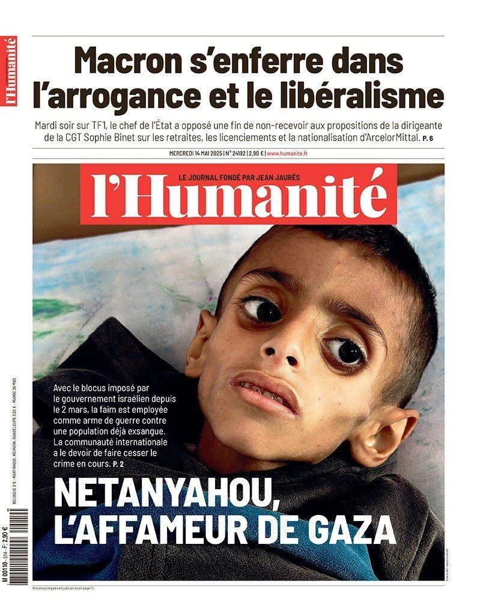

Revue de presse
« Ne pas détourner le regard ». La une de L’Humanité sur Gaza
Date indiquée par Facebook · 14 mai 2025
Repères éditoriaux
Nous avons relayé la une de L’Humanité consacrée à la famine à Gaza. L’image identifie la source et la formule choisie par le journal.
Texte conservé avec la publication
Ne pas détourner le regard.

Sources
Archive rouge · export Facebook · AR-0002-FB-01120
À lire aussi · À Niort, le rassemblement du 25 octobre pour la paix en vidéo · Le lien d’origine